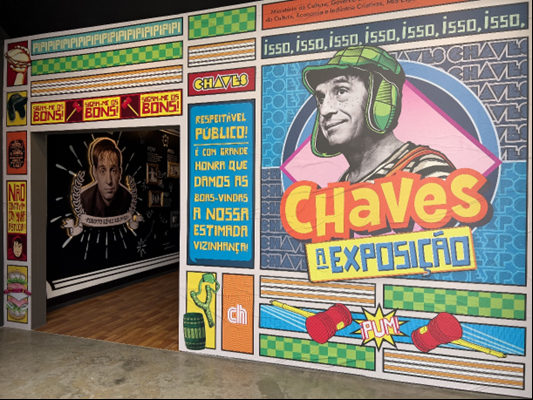

Última chance para reviver a infância: 'Chaves: A Exposição' com ingressos promocionais

A exposição que celebra 40 anos de 'Chaves' no Brasil oferece descontos especiais na reta final; visite a Vila do Chaves e reviva momentos inesquecíveis da infância até 4 de agosto no MIS Experience.
"Chaves: A Exposição" está chegando à sua reta final e oferece ingressos com valores promocionais até 4 de agosto, último dia em cartaz. Durante a semana, a entrada custará R$30,00 e aos finais de semana e feriados R$40,00. A mostra, realizada pelo MIS Experience, celebra os 40 anos de estreia de um dos seriados mais queridos da TV brasileira e já recebeu mais de 250 mil visitantes.
Para muitos, "Chaves" não é apenas um programa de TV, mas um marco na infância, repleto de risadas e lições. As aventuras de Chaves, Chapolin Colorado e os demais moradores da vila criada por Roberto Gómez Bolaños, conhecido como Chespirito, marcaram gerações. Este amor pelo seriado é refletido na exposição, que transporta os visitantes para dentro das séries, com cenários recriados detalhadamente, incluindo a Vila do Chaves, a casa do Seu Madruga e a sala da Bruxa do 71.
A exposição é inédita no mundo e reúne um acervo exclusivo de figurinos, itens e roteiros originais trazidos do México. Além disso, oferece uma oportunidade única de conhecer a vida e obra de Chespirito, o gênio por trás de personagens inesquecíveis.
Os ingressos podem ser adquiridos na bilheteria física do MIS Experience ou no site www.expochaves.com.br. Às terças-feiras, a entrada é gratuita, com ingressos retirados exclusivamente na bilheteria no dia da visita, sujeito à lotação.
A exposição "Chaves: A Exposição" estará em cartaz até 4 de agosto de 2024, no MIS Experience, localizado na Rua Cenno Sbrighi, 250, Água Branca, São Paulo. Os ingressos custam R$30,00 (inteira) e R$15,00 (meia) de quartas a sextas e R$40,00 (inteira) e R$20,00 (meia) aos sábados, domingos e feriados, com entrada gratuita às terças-feiras e na terceira quarta-feira do mês graças a uma parceria com a B3. Os ingressos estão disponíveis no site www.expochaves.com.br e na bilheteria do MIS Experience. O horário de visitação é de terças a sextas, domingos e feriados, das 10h às 19h, com permanência até 20h30, e aos sábados das 10h às 20h, com permanência até 21h30. A classificação indicativa é livre.
"Chaves: A Exposição" é uma realização do Ministério da Cultura, Governo do Estado de São Paulo, por meio da Secretaria da Cultura, Economia e Indústria Criativas, MIS Experience, Chespirito, Boldly e Deeplab Project, por meio da Lei Federal de Incentivo à Cultura. A mostra conta com o patrocínio de várias empresas e apoios culturais, tornando-se um evento imperdível para todas as idades.